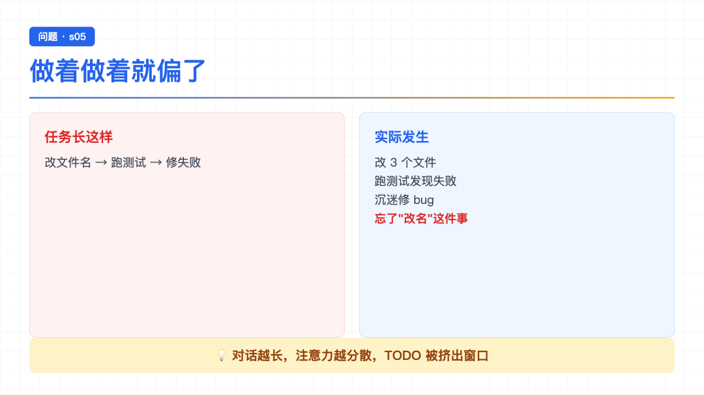
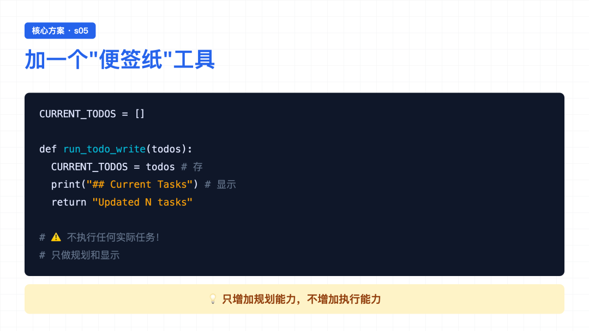
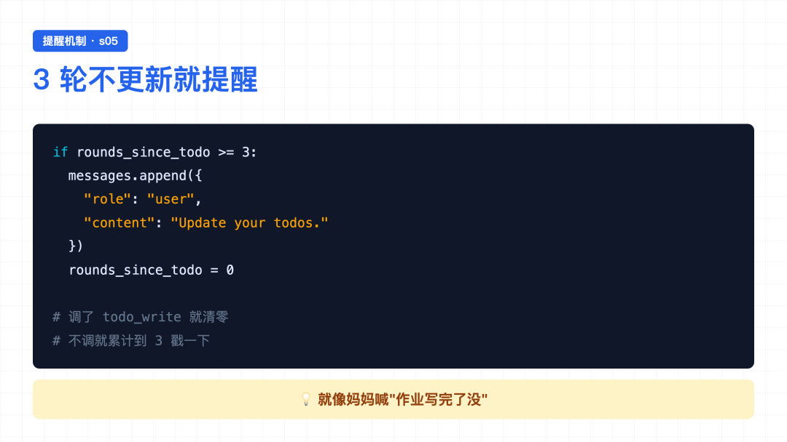
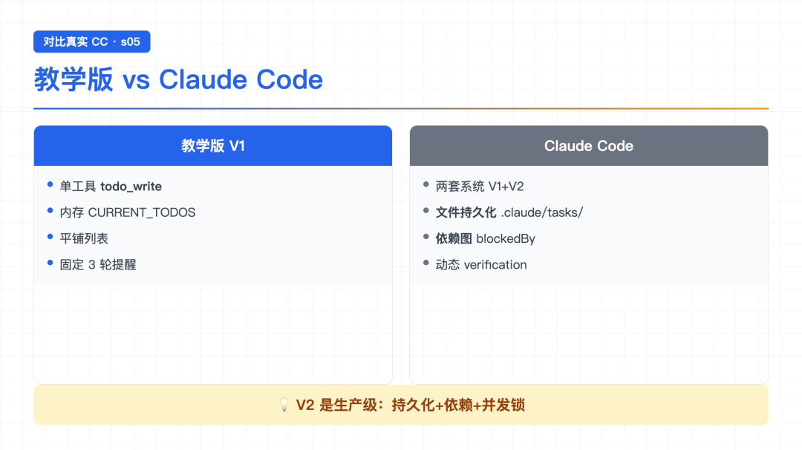

大家好，我是郑同学。周末赶紧多学学[旺柴]
上一节 s04 读到结尾，作者留了个钩子：Hooks 让 Agent 能不断扩展，循环本身一行不动。 但读完我心里又冒出个新疑问——Agent 能扩展了，但它会"想清楚再动手"吗？
回忆一下前几节的 Demo：每次给 Agent 一个任务，它都是收到就开干。让它重构文件，它直接 read → edit → read → edit，一路即兴发挥。任务短没事，任务一长呢？做着做着是不是就忘了最初要干什么？
作者在 s05 给出了答案——加一个 todo_write 工具，让 Agent 在动手之前先列计划。这一节就读这个。
● ● ●

做着做着就偏了
作者在 README 里举了个例子，我读完特别有共鸣：
给 Agent 一个任务："把所有 Python 文件改成 snake_case 命名，然后跑测试，修好失败。"
Agent 收到任务，开始干活：
为什么？对话越长，注意力越分散。每一步的工具结果都在填上下文，系统提示的影响力被稀释。一个 10 步的重构任务，做完 1-3 步 Agent 就开始即兴发挥了——因为 4-10 步已经被挤出注意力窗口了。
读到这儿我突然意识到，这其实跟人一样——给我十个任务，我也会漏掉几个。区别在于，人会用纸笔、用便签、用 TODO 列表来对抗遗忘，而前几节的 Agent 没有这个能力。
那作者的解法是什么？
● ● ●

便签纸工具 todo_write
作者的思路特别朴素——给 Agent 也发一张"便签纸"。
具体做法：加一个新工具 todo_write，让 Agent 把任务拆成带状态的步骤，存在内存里，随时能看、随时能改。
关键点先说在前面：todo_write 这个工具不做任何实际工作。它不能读文件、不能跑命令、不能改代码。它唯一的功能就是——让 Agent 把计划写下来。
这听起来有点反直觉——一个"什么都不做"的工具，加它干嘛？
作者的洞察在这里：todo_write 不给 Agent 增加执行能力，它增加的是规划能力。
● ● ●
看下 todo_write 的实现。核心是一个进程级的全局变量 + 一个工具函数：
CURRENT_TODOS: list[dict] = [] def run_todo_write(todos: list) -> str: global CURRENT_TODOS CURRENT_TODOS = todos lines = ["\n## Current Tasks"] for t in CURRENT_TODOS: icon = {"pending": " ", "in_progress": "▸", "completed": "✓"}[t["status"]] lines.append(f" [{icon}] {t['content']}") print("\n".join(lines)) return f"Updated {len(CURRENT_TODOS)} tasks"
逐行读：
CURRENT_TODOS——一个全局列表，这就是"便签纸"本身。每次调用 todo_write 会整体覆盖。todos 是一个列表，每项是一个 dict，包含 content（任务内容）和 status（状态）。pending（空格，未开始）、in_progress（▸，进行中）、completed（✓，完成）。print 出来给终端看，return 一句话告诉模型"更新了 N 个任务"。注意这个函数只做两件事：存到全局变量 + 打印。它不执行任何任务本身。
● ● ●
新工具怎么挂上去？还是 s02 那一套——加两条：
# 第一步：TOOLS 数组加描述（给模型看的"菜单"） TOOLS = [ {"name": "bash", ...}, {"name": "read_file", ...}, # ... 其他 4 个 ... # s05 新增： { "name": "todo_write", "description": "Create and manage a task list ...", "input_schema": { "type": "object", "properties": { "todos": { "type": "array", "items": { "type": "object", "properties": { "content": {"type": "string"}, "status": {"type": "string", "enum": ["pending", "in_progress", "completed"]}, }, }, }, }, }, }, ] # 第二步：TOOL_HANDLERS 加映射（给后厨的"谁来做"） TOOL_HANDLERS["todo_write"] = run_todo_write
两步加完，循环一字不改。 这就是 s02 讲的"加工具只需两步"——到了 s05 还是这套，证明前面的设计经得起考验。
● ● ●

Nag Reminder 3轮提醒
光给工具还不够。作者还加了一个机制——如果 Agent 连续 3 轮没调 todo_write，循环会主动提醒它"更新一下你的 todos"。
代码在 agent_loop 里加了几行：
rounds_since_todo = 0 # 计数器 def agent_loop(messages: list): global rounds_since_todo while True: # 连续 3 轮没调 todo_write，就注入一条提醒 if rounds_since_todo >= 3 and messages: messages.append({ "role": "user", "content": "Update your todos.", }) rounds_since_todo = 0 response = client.messages.create(...) # ... 中间省略工具执行 ... for block in response.content: if block.type != "tool_use": continue # ... 执行工具 ... # s05 新增：调了 todo_write 就重置计数器 if block.name == "todo_write": rounds_since_todo = 0 rounds_since_todo += 1
读这段代码的几个关键点：
rounds_since_todo 是个计数器，每轮循环结束 +1。todo_write，计数器立刻清零。"Update your todos."。读到这儿我突然反应过来——这不就是妈妈在身后喊"作业写完了没"吗？Agent 自己可能忘了看 TODO，但循环会定期戳它一下，逼它回头看进度。
● ● ●
原理到这里就讲完了，但在跑 Demo 之前，我想把 s05 的核心代码完整贴出来，把"便签纸"是怎么挂到循环上的串一遍——看看 todo_write 和 nag reminder 到底是怎么配合的。
完整核心就两块：工具（便签纸）+ 计数器（提醒机制）。
# ===== 第一块：便签纸本身 ===== CURRENT_TODOS: list[dict] = [] def run_todo_write(todos: list) -> str: global CURRENT_TODOS todos, error = _normalize_todos(todos) # 校验格式 if error: return error CURRENT_TODOS = todos # 整体覆盖 # 打印进度条给终端看 lines = ["\n## Current Tasks"] for t in CURRENT_TODOS: icon = {"pending": " ", "in_progress": "▸", "completed": "✓"}[t["status"]] lines.append(f" [{icon}] {t['content']}") print("\n".join(lines)) return f"Updated {len(CURRENT_TODOS)} tasks" # ===== 第二块：nag reminder（循环里的几行） ===== rounds_since_todo = 0 def agent_loop(messages: list): global rounds_since_todo while True: # 【提醒机制】：3 轮没更新就戳一下 if rounds_since_todo >= 3 and messages: messages.append({"role": "user", "content": "Update your todos."}) rounds_since_todo = 0 response = client.messages.create(model=MODEL, system=SYSTEM, messages=messages, tools=TOOLS) messages.append({"role": "assistant", "content": response.content}) if response.stop_reason != "tool_use": return rounds_since_todo += 1 results = [] for block in response.content: if block.type != "tool_use": continue # ... 权限检查、hook 等（和 s04 一样）... output = TOOL_HANDLERS[block.name](**block.input) # 【重置】：调了 todo_write 就清零计数器 if block.name == "todo_write": rounds_since_todo = 0 results.append({"type": "tool_result", "tool_use_id": block.id, "content": output}) messages.append({"role": "user", "content": results})
两块各自独立，但配合起来就是一套完整的"规划 + 提醒"系统。串一遍：
第一块——run_todo_write。这是 Agent 的"便签纸"。它只做三件事：校验格式、存到全局变量、打印进度。它不执行任何实际任务——不能读文件、不能跑命令。它纯粹是个规划工具。
第二块——nag reminder。这是循环里的几行代码。每轮循环结束 +1，累计到 3 就以"user"身份注入一条提醒，然后清零。如果 Agent 主动调了 todo_write，计数器立刻清零。
把两块拼起来，看一次典型的多步任务流程：
# 用户输入：重构一个文件，加类型注解、docstring 和 main guard # → Agent 收到后，先调 todo_write 列计划： todo_write([ {"content": "加类型注解", "status": "pending"}, {"content": "加 docstring", "status": "pending"}, {"content": "加 main guard", "status": "pending"}, ]) # 输出： # ## Current Tasks # [ ] 加类型注解 # [ ] 加 docstring # [ ] 加 main guard # → 开始做第一步，把状态改成 in_progress： todo_write([ {"content": "加类型注解", "status": "in_progress"}, # ← 改这个 {"content": "加 docstring", "status": "pending"}, {"content": "加 main guard", "status": "pending"}, ]) # → 用 edit_file 真正改文件（todo_write 不管执行） edit_file(...) # → 第一步做完，标记 completed，开始第二步： todo_write([ {"content": "加类型注解", "status": "completed"}, # ← 完成 {"content": "加 docstring", "status": "in_progress"}, # ← 下一个 {"content": "加 main guard", "status": "pending"}, ])
看这个流程：Agent 每做完一步都会回头看 TODO，决定下一步做什么。即使中途被测试失败打断了，TODO 列表还在那儿，Agent 知道自己原本要干什么。
如果 Agent 沉迷修 bug 忘了更新 TODO 怎么办？循环会在第 3 轮注入一条 "Update your todos."，把它拉回来。
理解了这个协作过程，下面看 Demo 就一目了然了。
● ● ●
光看代码没感觉，跑一下。我给 Agent 一个多步任务：
Refactor hello.py: add type hints, docstrings, and a main guard
观察 Agent 的第一步——它会先干什么？
如果 s01~s04 的 Agent，它可能直接 read_file(hello.py) 开干。但 s05 的 Agent，第一步通常是 todo_write——先把三件事列出来：
> todo_write ## Current Tasks [ ] add type hints [ ] add docstrings [ ] add main guard Updated 3 tasks
然后才开始动手。先 read_file 看一眼文件内容，把第一项标成 in_progress：
> todo_write ## Current Tasks [▸] add type hints ← 正在做 [ ] add docstrings [ ] add main guard
接着用 edit_file 加类型注解。加完之后，把第一项标成 completed，第二项标成 in_progress：
> todo_write ## Current Tasks [✓] add type hints ← 完成 [▸] add docstrings ← 下一个 [ ] add main guard
一路下去，每完成一步就更新一次 TODO，直到所有项都变成 [✓]。
读完这个 Demo 我最大的感受是——s05 的 Agent 终于不像"蒙头干活"了。它会在动手前思考、会在过程中回顾、会清楚地知道"我做完了哪步、还剩哪步"。这种"有计划地推进"的感觉，前四节都没有。
● ● ●

教学版 vs Claude Code
教学版的 todo_write 已经很巧妙了，但读到"深入 CC 源码"那节，我才发现 CC 在生产环境里还多了几手。教学版和真实 CC 的对比：
教学版 Claude Code ────────── ────────────── 单工具 todo_write 两套系统并存（V1 + V2） 内存 CURRENT_TODOS V2 文件持久化 .claude/tasks/ 平铺列表 V2 blockedBy 依赖图 无锁 V2 proper-lockfile 并发安全 固定 3 轮 nag reminder 动态 verification nudge 无 hook TaskCreated/Completed hooks
几个有意思的差距：
两套任务系统并存。 CC 源码里 tasks.ts:133-139 有个开关 isTodoV2Enabled()，控制用 V1（简单列表）还是 V2（文件持久化+依赖图）。交互式会话默认启用 V2，SDK 非交互式默认 V1。教学版只做了 V1。
V2 才是生产级。 V2 的核心增量：文件持久化（重启不丢）、依赖图（任务间能声明依赖）、并发锁（多 Agent 不会冲突）、四个独立工具（Create/Get/Update/List，不再是单个 todo_write）。
Nag reminder 不一样。 教学版是"3 轮没调就提醒"，CC 源码没有固定的 3 轮逻辑，更接近的是 TodoWriteTool.ts:72-107 里——当 3 个以上 todo 全部 completed 但没有 verification 项时，追加一条 verification nudge，提醒 Agent "做个验证步骤吧"。意图相似，触发条件不同。
教学版的"固定 3 轮"对教学更直观——一眼看到提醒机制是怎么工作的。CC 的"动态 verification"对生产更合理——它不是死板的计时，而是基于任务状态的智能提醒。
● ● ●
读完代码我发现一个细节——s05 的 SYSTEM 提示也变了：
SYSTEM = ( f"You are a coding agent at {WORKDIR}. " "Before starting any multi-step task, use todo_write to plan your steps. " "Update status as you go." )
多了一句"Before starting any multi-step task, use todo_write to plan your steps."
这其实很关键——光给工具还不够，还要在系统提示里引导模型去用它。否则模型可能不知道什么时候该列计划，照样即兴发挥。
这让我想起 s03 那节的结论：安全不能只靠 prompt，要靠代码强制。但 s05 这里的逻辑反过来——规划不能只靠代码 nag，还要靠 prompt 引导。两者配合才有效：prompt 告诉模型"该怎么用"，nag reminder 在模型忘了用时戳它一下。
● ● ●
读完 s05，我自己最大的感悟是——Agent 的"聪明"不只是会调工具，还得会"想清楚再动手"。
前四节的 Agent 都很强：s01 能循环、s02 能调工具、s03 能查权限、s04 能挂 Hook。但它们都有一个共同的弱点——没有规划能力。任务一长就会偏，做着做着就忘。
s05 给出的答案特别朴素：加一个"什么都不做"的 todo_write 工具，让 Agent 把计划写下来；再加一个 nag reminder，在 Agent 忘了更新时戳它一下。两个机制配合，Agent 终于像"会列清单的人"了。
几个关键点回顾：
todo_write 工具——只做规划，不做执行。存到全局变量 CURRENT_TODOS，打印进度给终端看todo_write，循环以 user 身份注入 "Update your todos."todo_write 本身没给 Agent 增加任何执行能力，但它让 Agent 有了"规划"这个维度。 这是我读这章最大的收获。
● ● ●
s05 让 Agent 会计划了。但如果任务太大——比如"重构整个认证模块"——光靠一个 TODO 列表不够。这个任务本身就是几十个小任务的集合，放在同一个对话里会被上下文淹没，TODO 列表再长也救不了。
那怎么办？能不能把大任务拆成子任务，每个子任务派一个独立的 Agent，它有自己的干净上下文，互不污染？
下一节 s06 Subagent，就读这个——把大任务派出去，让子 Agent 用独立的上下文干活。
源码地址：https://github.com/shareAI-lab/learn-claude-code